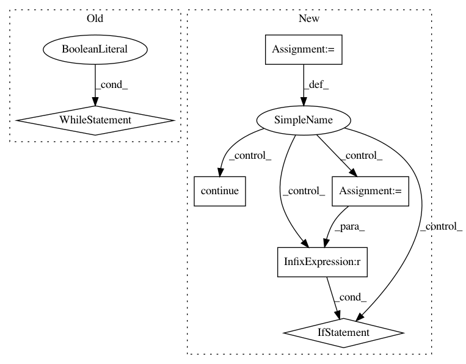

54ca2c098233300e63491dad6932220d01743c56,catalyst/rl/core/sampler.py,Sampler,_run_sample_loop,#Sampler#,209
Before Change
return
def _run_sample_loop(self):
while True:
self._run_trajectory_loop()
def _start_sample_loop(self):
self._run_sample_loop()
def run(self):
After Change
trajectory, trajectory_info = self._run_trajectory_loop()
if trajectory is None:
continue
if not self._infer or self._force_store:
self._store_trajectory(trajectory)
self._log_to_console(**trajectory_info)
self._log_to_tensorboard(**trajectory_info)
self.trajectory_index += 1
if self.trajectory_index % self._gc_period == 0:
gc.collect()
if self.trajectory_index >= self._trajectory_limit:
return
def _start_sample_loop(self):
In pattern: SUPERPATTERN
Frequency: 3
Non-data size: 6
Instances
Project Name: Scitator/catalyst
Commit Name: 54ca2c098233300e63491dad6932220d01743c56
Time: 2019-06-06
Author: scitator@gmail.com
File Name: catalyst/rl/core/sampler.py
Class Name: Sampler
Method Name: _run_sample_loop
Project Name: pyannote/pyannote-audio
Commit Name: 83f1d50ae82d314437042ddfa1567f6958be41e3
Time: 2016-09-05
Author: bredin@limsi.fr
File Name: scripts/speaker_embedding.py
Class Name:
Method Name: tune